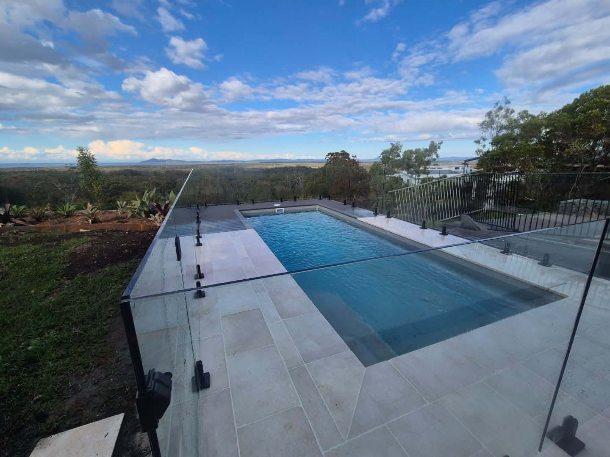

01
Pool landscaping
Pool landscaping
& surrounds
Everything around the pool—from tiling, paving and decking to retaining, fencing, drainage, turf and planting.
Pool construction is completed by your pool builder.